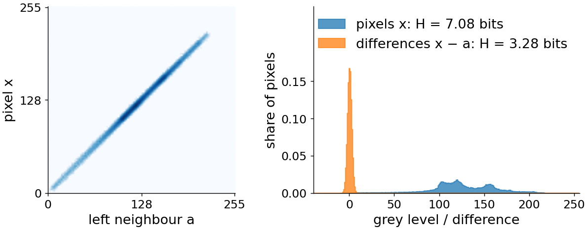
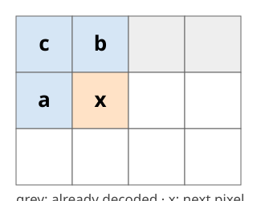
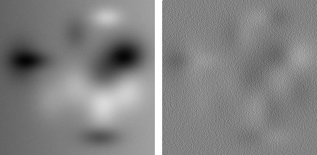
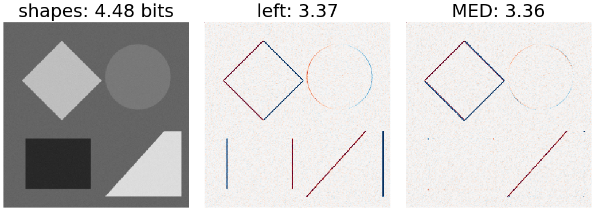
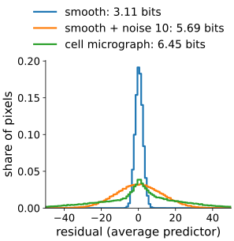
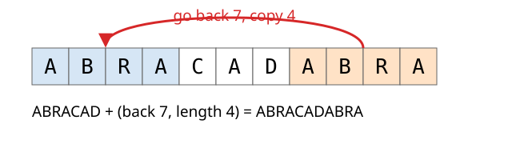

Last unit: entropy coding removes the coding redundancy, but the grey-level entropy ignores neighbours. This unit removes the inter-pixel redundancy without losing anything.
Prediction: store only what the neighbours did not predict, the residual.
Predictors: left, up, average, planar, Paeth (PNG), MED (JPEG-LS).
Noise sets the floor: why noisy micrographs compress only 1.2–2.5 times.
Dictionary coding (LZ77, DEFLATE): repeats are cheap.
Slides titled The math give the formulas and proofs; the ideas are complete without them.
Neighbours are alike
Plot every pixel against its left neighbour: for a smooth image the points lie on a narrow band around the diagonal.

Knowing the left neighbour, the pixel is almost known. What is new is only the small difference.
The grey-level histogram is wide (entropy 7.1 bits for the smooth image of the demo), the differences are narrow (3.3 bits).
Edges are where a neighbour does not predict the pixel: there the difference is large. The difference to the left neighbour is a finite-difference derivative (filtering unit).
Predictive coding (DPCM)

Scan the image row by row. For each pixel x:
predict\hat x from neighbours that are already decoded (a left, b up, c up-left);
store the residuale = x - \hat x, entropy-coded.
The decoder makes the same prediction from the same decoded neighbours and adds e back: x = \hat x + e. Exact: nothing is lost.

Smooth image and its residual with the left neighbour as predictor (mid grey = 0, contrast ×8).
A row by hand
Row: 100 102 104 103 105 107 106 108, predictor: left neighbour (the first value is stored as it is).
pixel
100
102
104
103
105
107
106
108
residual
(100)
2
2
−1
2
2
−1
2
8 different pixel values: 3 bits each.
The 7 residuals use only two values, 2 (5 times) and −1 (2 times): H = 0.86 bits.
The decoder knows \hat x (a function of decoded pixels), so x \mapsto e = x - \hat x is invertible given the past: lossless.
Cost per pixel \approx H(e), the entropy of the residual histogram. For a Gaussian-like histogram with standard deviation \sigma (in grey levels), H \approx \log_2\!\big(\sigma\sqrt{2\pi e}\big) = \log_2 \sigma + 2.05 bits: halving the spread saves one bit.
Left predictor on a smooth signal: e_i = x_i - x_{i-1} \approx \partial x/\partial t; planar a + b - c is exact on any plane x = \alpha + \beta i + \gamma j.
Noise floor: if x = s + n with independent noise of variance \sigma_n^2 and a perfect predictor of s from noisy neighbours, the residual still contains n_i - n_{i-1}: variance \ge \sigma_n^2, and 2\sigma_n^2 for the left predictor. On pure noise, prediction adds\log_2\sqrt2 = 0.5 bit.
Predictors
With a = left, b = up, c = up-left:
name
prediction \hat x
good for
left / up
a / b
horizontal / vertical structure
average
\lfloor (a + b)/2 \rfloor
smooth regions (averaging also halves noise)
planar
a + b - c
smooth gradients (exact on planes)
Paeth (PNG)
the one of a, b, c closest to a + b - c
edges in any direction
MED (JPEG-LS)
\min(a,b) if c \ge \max(a,b); \max(a,b) if c \le \min(a,b); else a + b - c
edges: picks the side the pixel is on
MED, the median edge detector: if c is brighter than both a and b, an edge runs between c and x, so take the darker neighbour. It is the median of a, b and a + b - c.
Right: residuals of a test image (red > 0, blue < 0, entropy in bits per pixel). The left predictor leaves every vertical edge; MED removes the vertical and horizontal ones.

Try it: prediction
Noise sets the floor
The residual can never be narrower than the noise: noise is new information in every pixel.
image (256 × 256)
pixels H
best residual H
ideal ratio
smooth synthetic, noise sd 1.5
7.08
3.11 (average)
2.6
same + noise sd 10
7.21
5.69 (average)
1.4
cell micrograph (8 bit)
7.68
6.45 (average)
1.24
12-bit fluorescence, Poisson noise
8.42
7.16 (average)
2.2 (of 16 bits stored)

(ideal ratio = stored bits per pixel / residual entropy.) Lossless ratios for real microscopy data are typically 1.5–3×, not 10×. The 12-bit image gains mostly because its 16-bit storage has 4 empty bits.
Lossless formats: PNG and JPEG-LS
PNG: each row picks one filter (None, Sub = left, Up, Average, Paeth), then the filtered bytes go through DEFLATE. 1 to 16 bits per channel.
JPEG-LS (LOCO-I, 1990s): MED prediction, then the residuals are context-modelled (the local gradients choose a probability model) and coded with simple Golomb–Rice codes; also a near-lossless mode (error ≤ a set bound). Used in medical imaging.
Lossless JPEG 2000 (reversible integer wavelet, last unit of the day) and JPEG-XL lossless (several predictors, context modelling, an arithmetic-type coder) do somewhat better.
All of them: predict or transform first, then entropy-code what is left.
Dictionary coding: repeats are cheap

LZ77 (Ziv and Lempel 1977): replace a repeat by a pointer (go back d, copy \ell symbols) into a sliding window of recent data. LZW (GIF, TIFF) builds a table of strings instead.
DEFLATE = LZ77 + Huffman: zip, gzip, PNG, TIFF. Modern successors (e.g. Zstandard) are faster and stronger, used in chunked array formats.
They need exact repeats. Noisy pixel values rarely repeat exactly, which is why PNG predicts first, and why DEFLATE on 16-bit values (two bytes) is poor.
Summary
Neighbours are alike: store the residuale = x - \hat x of a prediction from decoded neighbours; the decoder repeats the prediction, so it is exact.
Residual histograms are narrow and centred at 0: much lower entropy than the pixels.
Edges and noise are what prediction cannot remove; noise sets the floor (pure noise: prediction even costs 0.5 bit).
PNG: row filters + DEFLATE; JPEG-LS: MED + context modelling.